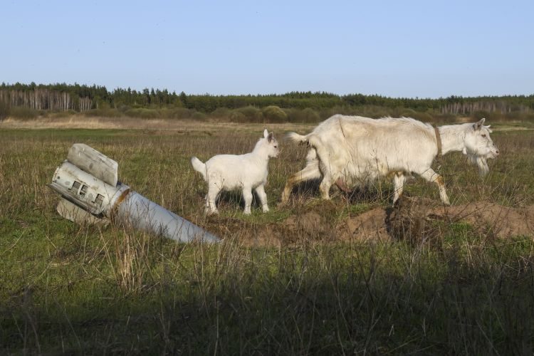

ЧОМУ ТЕМА ШКОДИ ДОВКІЛЛЮ ВІД ВІЙНИ ВАЖЛИВА
Війни приносять з собою не тільки людські страждання та економічні
збитки, але й значну шкоду довкіллю. Розглянемо основні причини, чому ця
тема заслуговує на нашу увагу.
1. Знищення природних ресурсів
Під час
воєнних дій значна кількість природних ресурсів може бути знищена або
забруднена. Ліси вирубуються для побудови військових баз або
використовуються як ресурси для ведення війни. Це призводить до втрати
біорізноманіття та руйнування екосистем. 2. Забруднення повітря та води
Військові дії
часто супроводжуються вибухами та пожежами, які викидають в атмосферу
велику кількість токсичних речовин. Це забруднює повітря, яким дихають
люди, та воду, яку вони п'ють, що призводить до довгострокових
негативних наслідків для здоров'я населення. 3. Вплив на тваринний світ
Військові дії
призводять до масового переселення тварин, руйнування їхнього природного
середовища та безпосередньої загибелі від бойових дій. Це має
катастрофічні наслідки для популяцій багатьох видів, включаючи ті, що
знаходяться під загрозою зникнення. Зображення: Фото дикої природи,
постраждалої від війни. 5. Токсичні залишки та відходи Залишки
військової техніки, боєприпасів та інших військових матеріалів можуть
містити токсичні речовини, які забруднюють ґрунт та воду. Це робить
землі непридатними для сільського господарства та небезпечними для
проживання людей. 